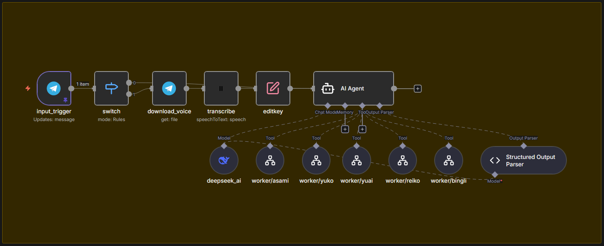

Business Transformation
Feature
Real-time Tracking
Core
Deepseek AI Agent
Impact
Zero Paper Waste
"I build what your business needs to scale."
Tersedia untuk jasa konsultasi solusi teknis, pembuatan MVP, dan optimasi alur kerja digital.
The Automation Lab
AI-LIN: Personal Assistant
Sistem asisten modular berbasis Telegram yang mengorkestrasi berbagai spesialis AI (ASAMI, YUKO, dll) untuk manajemen hidup tanpa gesekan.
Voice-to-Structured Data.
Multi-LLM Routing.
Auto-Sync to Notion/Sheet

Powered by n8n
Strategic Infrastructure
Wireless & Network Design
Penyusunan High-Level Design (HLD), Heatmap survey, dan Bill of Materials (BoM) untuk kebutuhan jaringan skala menengah hingga enterprise.
Technical Sales Collateral
Membantu mengemas solusi teknis menjadi paket yang mudah dipahami oleh pengambil keputusan bisnis.